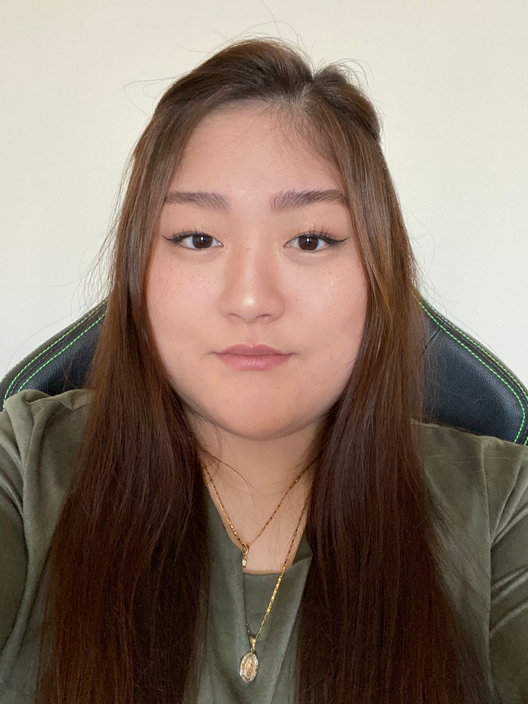

Olá! Sou Lorena Emy Hayashida. Meu sonho é virar um desenvolvedora Front-End!
Sou formada em Administração na UEL desde 2018 e tenho Pós-Graduação em MBA Inovação e Criatividade no Ambiente Empresarial na Unicesumar-Maringá. Sempre tive interesse em tecnologia, porém com a matéria de Inteligencia Artificia me despertou meu interesse em aprofundar os estudos na área. Hoje estou cursando Análise e Desenvolvimento de Sistemas na Unopar Anhaguera - Arapongas com a previsão para finalizar em Dezembro de 2024.
Instagram Github 